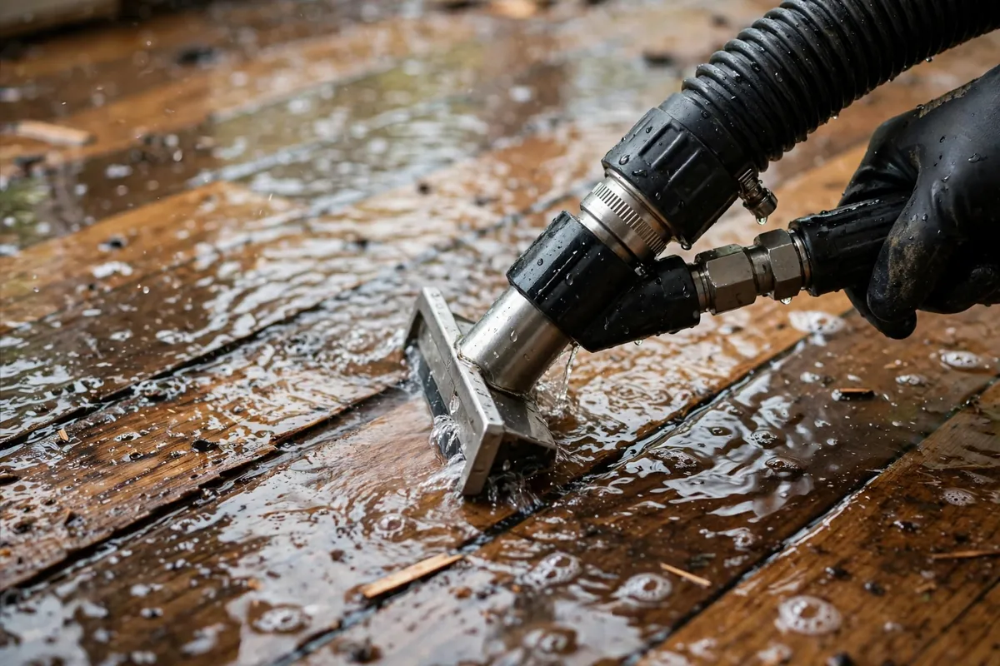

Emergency Water Extraction in Hollywood, FL
When water is standing on your floors, speed is the difference between a contained loss and a much larger repair. Emergency water extraction in Hollywood, FL is the first critical step after a pipe break, appliance failure, or flood-related intrusion. Hollywood Water Damage Experts provides 24/7 water extraction so bulk water is removed and structural drying can begin under better conditions.

Why Emergency Water Extraction Matters
Standing water continues to soak into carpet padding, drywall, underlayment, and baseboards the longer it remains. In South Florida’s humidity, that moisture also creates conditions that support microbial growth within a day or two. Professional water extraction removes the bulk of the water quickly so you are not relying on towels, shop vacuums, or time alone.
Emergency water extraction is not the same as simply “mopping up.” High-volume extractors and truck-mounted or portable pumps move water out of the structure efficiently. After extraction, moisture meters help identify what is still wet inside materials. That information drives the drying plan.
What Happens During an Extraction Call
When you call for emergency water extraction near me in Hollywood, we gather the address, the likely source, and any safety concerns. A crew responds with extraction equipment. On site, we confirm the water source is controlled, assess the category of water when relevant, and begin removing standing water from affected rooms. We protect pathways when needed and move systematically so water is not tracked into dry areas.
After bulk water is gone, we map moisture in walls, floors, and other assemblies. Air movers and dehumidifiers are then placed for structural drying. Extraction without drying leaves the job incomplete. Drying without extraction makes the equipment work harder and longer than necessary.
Where We Provide Water Extraction in Hollywood
We provide emergency water extraction across Hollywood Beach, Hollywood Lakes, Emerald Hills, Hollywood Hills, Downtown, Boulevard Heights, Driftwood, and surrounding neighborhoods. Residential and commercial properties are both covered. If you searched for water extraction near me after a sudden leak, we are set up for rapid local response.
Extraction and the Rest of the Restoration Process
Water extraction sits at the front of a longer process that can include cleaning, antimicrobial treatment when appropriate, and documentation for insurance. Related services such as flood cleanup, structural drying, and burst pipe cleanup often follow or run alongside extraction depending on the loss.
Frequently Asked Questions
How fast can you arrive for emergency water extraction in Hollywood?
We prioritize active water losses and aim for rapid local response across Hollywood, FL. Call (754) 294-7959 for the soonest available crew.
Is extraction enough, or do I also need drying?
Extraction removes standing water. Materials often remain wet inside. Structural drying with air movers and dehumidifiers is usually required after extraction.
Do you extract water from carpets and hard floors?
Yes. We extract from carpeted areas, hard surface floors, and other accessible wet areas as part of the emergency response.
Will extraction help with insurance documentation?
We document the loss with photos and moisture information that you can share with your carrier. Coverage decisions remain with your insurer.